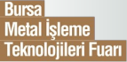
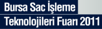
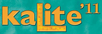
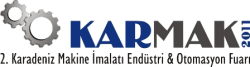
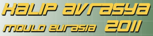
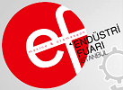
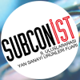
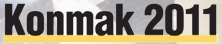
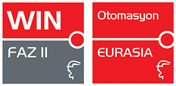

24 - 27 Kasým 2011 > TIME 2011, 6. Uluslararasý Üretim Teknolojileri Fuarý:
Yer: CNR EXPO Ýstanbul
TATEF Uluslararasý Metal Ýþlem ve Teknolojileri Fuarý ile dönüþümlü olarak her iki yýlda bir düzenlenen TIME - Uluslararasý Üretim Teknolojileri Fuarý, Türkiye'nin makine ve teknoloji üretiminde ulaþtýðý düzeyin dünyaya sergilendiði, hedef kitleye teknolojinin uygulamalý tanýtýmlarýnýn gerçekleþtirildiði dev bir organizasyondur.
Bu fuar, EUF – E Uluslararasý Fuar Tanýtým Hizmetleri A.Þ. ve ITF Ýstanbul Fuarcýlýk tarafýndan MÝB – Makine Ýmalatçýlarý Birliði iþbirliðiyle organize edilmektedir.
T.C. Sanayi ve Ticaret Bakanlýðý ve KOSGEB’in de bu yýl destek verdiði TIME fuarý, “Üreten Türkiye’nin Teknoloji Fuarý” sloganýyla, sanayi üretiminde rekorlara koþan ülkemiz endüstrisini bölge pazarlarýyla buluþturma hedefiyle yola çýkmýþtýr.
Fuardaki ürün gruplarý:
- Sac iþleme makineleri
- Kaynak makine ve ekipmanlarý
- Endüstriyel robotlar
- Yüzey iþlem teknolojileri
- Endüstriyel boya sistemleri
- Endüstriyel fýrýnlar
- Otomasyon sistemleri
- Hidrolik-pnömatik sistemler
- Elektrik/elektronik sistemler
- Kesme yaðlarý – kimyasallar
- Kompresörler
- Elektrik motorlarý
- Redüktörler
- Hýrdavat ve el aletleri
- Lazer kesme makineleri
- Ýstifleme makineleri
- Depolama sistemleri
- Çevre-güvenlik sistem ve ekipmanlarý
- Tasarým mühendisliði
- CNC /NC takým tezgahlarý
- CAD/CAM
- Kesici ve tutucu takýmlar
- Ölçüm-kalite kontrol ve laboratuar ekipmanlarý
- Metal kalýp döküm ürün ve teknolojileri
- Soðuk þekillendirme ve döküm kalýplarý
- Zýmparalar
- Lojistik hizmetleri
Daha
fazla bilgi için: www.ite-turkey.com/ver3/fairs/uretim
01-04 Aralýk 2011 >
10. Bursa Metal Ýþleme Teknolojileri Fuarý
3. Bursa Sac Ýþleme Teknolojileri Fuarý:
Yer: Bursa Uluslararasý Fuar ve Kongre Merkezi
KOSGEB, Bursa Büyükþehir Belediyesi ve Bursa Ticaret veSanayi Odasý desteði, TÝAD Takým Tezgâhlarý Sanayici ve Ýþ Adamlarý Derneði iþbirliði ile hazýrlanan 10. Bursa Metal Ýþleme Teknolojileri Fuarý, 3. Bursa Sac Ýþleme Teknolojileri Fuarý ile eþ zamanlý olarak ayný fuar merkezinde düzenlenecektir.
Fuar'da her türlü üretim aþamasýnda ihtiyaç duyulan; sac iþleme makinesinden CNC tezgahlara, elektrik, elektronik ve aydýnlatmadan iþ güvenliðine, hýrdavattan el aletlerine kadar geniþ bir alanda aradýklarý tüm ürünleri bir arada sergilenecek.
Fuarda ayrýca “Döküm Teknolojileri Özel Bölümü” ve “Depolama, Ýstifleme Özel Bölümü” yer alacaktýr.
Metal Ýþleme Teknolojileri Fuarý kapsamý:
- Talaþlý Ýmalat Makineleri (NC, CNC, Takým Tezgâhlarý),
- Presler,
- Kesici ve Tutucu Takýmlar,
- Endüstriyel Fýrýnlar,
- Teknik Hýrdavat ve El Aletleri,
- Aþýndýrýcýlar ve Zýmparalar,
- Endüstriyel Güvenlik Sistemleri,
- Redüktörler,
- Malzeme Kaldýrma ve Taþýma Ekipmanlarý,
- Elektroerezyon Tezgâhlarý,
- Toz ve Elektrostatik Boya makineleri,
- Elektrik Motorlarý,
- Endüstriyel Hava Temizleme Sistemleri,
- Hidrolik Pnömatik Sistemleri,
- Kalýplar ve Ýþleme Sistemleri,
- Kaynak Makineleri ve Yedek Parçalarý,
- Kesme Ekipmanlarý ve Yedek Parçalarý,
- Kesme Yaðlarý ve Sývýlarý,
- Endüstriyel Otomasyon Sistemleri,
- Kompresörler,
- Kimyasallarý,
- CAD/CAM Sistemleri ve Yazýlýmlarý,
- Diðer Makine Alet ve Donanýmlarý ve ilgili yayýnlar
Sac Ýþleme Teknolojileri Fuarý kapsamý:
- Esnek sac levha iþleme teknolojisi
- Sac levha/plaka yüzey teknolojisi (prosesle baðlantýlý)
- Þekillendirme teknolojisi
- Sac levha/plaka iþlemeye yönelik araç teknolojisi
- Boru/Kesit iþleme
- Presler
- Kesme ekipmanlarý ve yedek parçalarý
- Kesme yaðlarý ve Sývýlarý
- Ayýrma teknolojisi
- Sac levha, yarý bitmiþ ve bitmiþ ürünler
- Ýþleme teknolojisi
- Makine parçalarý
- Birleþtirme ve sabitleme teknolojisi
- Kaynak makineleri ve yedek parçalarý
- Endüstriyel fýrýnlar
- Kesici tutucu takýmlar
- Aþýndýrýcýlar ve zýmparalar
- Hidrolik Pnömatik sistemler
- Endüstriyel otomasyon sistemleri
- Kompresörler
- Endüstriyel hava temizleme sistemleri
- Ýstifleme makineleri
- Veri iþleme (donaným ve yazýlým)
- Fabrika ve depo donanýmlarý
- Çevre koruma
- Proses kontrolü ve kalite güvencesi
- Ýþ güvenliði
Daha
fazla bilgi için:
17 - 20 Kasým 2011 > KonDöküm 2011, 2. Döküm Teknolojileri, Kalýp, Paslanmaz Çelik ve Metaller Fuarý
Yer: KTO - TÜYAP Konya Uluslararasý Fuar Merkezi
Bu fuar, Konya 4. Yan Sanayiler Fuarý ile eþ zamanlý olarak gerçekleþtirilecektir.
Ülke genelindeki dökümhanelerin %25’ni sýnýrlarýnda bulunduran, baþta yan sanayi ve makine olmak üzere alt yapý hizmetleri ve inþaat sektöründe de döküm yapan Konyalý dökümcüler, sanayicisinin her geçen yýl kalite ve teknoloji yatýrýmlarýný arttýrmasý sayesinde, ülkemizin döküm ihtiyacýnýn yarýsýndan fazlasýný karþýlar duruma gelmiþtir.
Ülkemizin toplam ihracatý içinde büyük önem taþýyan Konya’da her türlü üretimde ihtiyaç duyulan ürün, teknoloji ve hizmetlerin topluca sergileneceði fuarlar, sektörlerde faaliyet gösteren lider firma ve firma temsilcilerinin katýlýmý ile gerçekleþtirilerek, 4 gün boyunca yurtiçi ve yurtdýþýndan gelecek binlerce profesyonel ziyaretçiye ev sahipliði yapacaktýr.
Fuar Kapsamý:
* Dökümhane Makineleri ve Ekipmanlarý
* Alüminyum ve Alaþýmlý Döküm
* Ergitme Malzemeleri
* Paslanmaz Metal
* Dökümhaneler (Demir, Çelik, Alüminyum, Çinko)
* Ocak - Fýrýn Ekipmanlarý
* Demir- Çelik Ürünler
* Model
* Kalýp
* Þekil Verme Teknolojileri
* Labaratuvar Ekipmanlarý ve Malzemeleri
* Temizleme Malzmeleeri ve Endüstriyel Ürünler
* Isýl Ýþlem Teknolojileri
* Refrakter Malzemeler
* Elektrik Motorlarý ve Makineleri
* Transfarmatörler
* Yüzey Ýþlem ve Kaplama Teknolojileri
* Hammadde
* Kimyasal Ürünler
* Ýlgili Yayýnlar
Daha
fazla bilgi için: www.konyadokumfuari.com
27 - 30 Ekim 2011 > Kalite'11 5. Kontrol, Metroloji, Test Ekipmanlarý ve Endüstriyel Yazýlým Fuarý
Yer: Ýstanbul Fuar Merkezi / Yeni Fuar Kompleksi - Yeþilköy 11. Salon
AB ile uyum süreci içinde ve sonrasýnda üretimin söz konusu olduðu bütün sektörlerin uymasý gereken yeni normlarýn ve standartlarýn yerleþmesi aþamasýnda ihtiyaç duyacaklarý tüm ürün ve hizmetleri bu fuarda sergilenecek. Ölçme ekipmanlarýndan, ölçü kalibrasyon sistemlerine ve koordinat ölçme makinelerine, kalite güvencesi veren firmalardan, laboratuar test ekipmanlarýna kadar her türden ürün bu fuarda sergilenecek.
Fuara katýlan firmalar Türkiye ve dünyada isim yapmýþ 500 ün üzerinde markayý 15.000 profesyonel ziyaretçi ile buluþturacaklar.
TÜBÝTAK-UME, TSE, TÝAD, TÜRKAK ve TÜRKLAB gibi uzman kuruluþlarýn, üretimde daha üst düzeyde kaliteyi arayan firmalarýn aradýklarýna her aþamada cevap verecekleri tek fuar olan Kalite'11; gýdadan otomotive, beyaz eþyadan tekstile, inþaattan ambalaja, elektronikten kimyaya ülkemizin önder firmalarýna daha kaliteli ve güvenilir üretim yapabilmeleri için yol gösterecek.
Fuar kapsamý;
- Kalite Kontrol Ekipmanlarý
- Kalibrasyon Ekipmanlarý ve Kalibrasyon Yapan Firmalar
- Laboratuar Alet ve Ekipmanlarý
- NDT Ekipmanlarý
- Metroloji Ekipman ve Donanýmlarý
- Koordinat Ölçme Makineleri
(CMM)
- Malzeme Test ve Analiz Ekipmanlarý
- Markalama Ekipmanlarý
- Kalite Güvence Firmalarý
- CAD/CAM/CAE/PDM/PLM Yazýlýmlarý
- Prototipleme ve Hýzlý Prototipleme
Daha
fazla bilgi için: www.kalitefuari.com
Not: TurkCADCAM.net, Kalite Fuarý'ný destekleyenler arasýnda yer almaktadýr.
22 - 25 Eylül 2011 > KARMAK'11, 2. Karadeniz Makine Ýmalatý Endüstri ve Otomasyon Fuarý
Yer:Trabzon Dünya Ticaret Merkezi Fuar Alaný
Bu Fuar; Karadeniz’e kýyýsý olan ülkeler, komþu ülkeler ve bölgedeki sanayiciler ile katýlýmcý firmalarý bir araya getirecek bir platform olacaktýr.
Trabzon; Balkanlar, Kafkasya, Avrupa ve Orta Doðu ülkelerinin kesiþim noktasýdýr. Baþta Gürcistan, Ukrayna, Rusya, Ýran, Azerbaycan olmak üzere ve diðer bölge ülkeleri ile birçok alanda iþbirliði içerisindedir.
Ulaþým kolaylýðý, coðrafi yakýnlýðý nedeniyle de bölgenin ticaret þehri olmuþtur. Fuar'a bu ülkelerden katýlýmcý ve ziyaretçi getirilerek ihracat ve yeni iþ baðlantýlarýnýn temelleri atýlacaktýr. Fuar endüstriyel alanda faaliyet gösteren üretici, ithalatçý, ihracatçý, sektörlere hizmet sunan tüm firmalar ve tüm ilgilileri bir araya getirecektir...
Kapsam:
- Makine Ýmalatý ve Metal Ýþleme Teknolojileri
- Birleþtirme, Kaynak, Kesme ve Yüzey Ýþleme Teknolojileri
- Plastik, Kauçuk, Ambalaj Makineleri
- Ticari Araçlar, Taþýma, Depolama, Ýstifleme ve Lojistik
- Ýþ, Ýnþaat Makineleri ve Ekipmanlarý Fuarý
Daha
fazla bilgi için: www.tureksfuar.com.tr/anafuar.asp?id=6
12 - 15 Mayýs 2011 > KALIP AVRASYA 2011 - Bursa 5. Kalýp Teknolojileri ve Yan Sanayiler Fuarý:
Yer: TÜYAP Bursa Uluslararasý Fuar ve Kongre Merkezi, Bursa
TÜYAP Bursa Fuarcýlýk Anonim Þirketi tarafýndan, Prestij Yayýncýlýk Ltd. ve UKUB Ulusal Kalýp Üreticileri Birliði iþbirliði, Bursa Büyükþehir Belediyesi ve Bursa Ticaret ve Sanayi Odasý desteði ile hazýrlanan KALIP AVRASYA 2011, AMBALAJ - PLASTÝK FUARI 2011, Bursa 10. Ambalaj ve Plastik Endüstrisi ve Kauçuk Fuarý, BURSA OTOTEKNÝK FUARI 2011, 4.Otomotiv Yan Sanayii, Garaj ve Servis Ekipmanlarý, Benzin Ýstasyonlarý Donanýmlarý ve LPG Sistemleri Fuarý ve BURSA GÜVENLÝK SÝSTEMLERÝ VE ENDÜSTRÝYEL TEMÝZLÝK VE HÝZMETLERÝ FUARI ile eþ zamanlý olarak 12 - 15 Mayýs 2011 tarihleri arasýnda Bursa Uluslararasý Fuar ve Kongre Merkezi’nde düzenlenecektir.
Kalýp Avrasya 2011, aþaðýdaki konularý kapsamaktadýr;
- Kalýp Ýmalat Çözümleri: Kesme Kalýplarý, Friksiyon Kalýplarý, Pres Kalýplarý, Ekstrüzyon Kalýplarý, Metal Enjeksiyon Kalýplarý, Termoform Kalýplarý, Sývama Kalýplarý, Plastik Enjeksiyon Kalýplarý, Þiþirme Kalýplarý, Model Kalýplarý, Kauçuk Enjeksiyon Kalýplarý, EPS Kalýplarý, Sac Metal Kalýplarý, Cam Kalýplarý, Döküm Kalýplarý, Dövme Kalýplarý, Vakum Kalýplarý, Model Ýmalatý,
- Kalýp Ýþlem ve Ýmalat Makineleri ve Ekipmanlarý: Dik Ýþleme Merkezleri, Yatay Ýþleme Merkezleri, Köprü Tipi Ýþleme Merkezleri, Frezeler, Matkaplar, Desenleme ve Gravürleme Makineleri, Bohrwerkler, Taþlama Makineleri, Erozyonla Ýþleme ve Delme Makineleri, Hidrolik-Ekzantrik Presler, Þerit Testere Tezgâhlarý, Plastik Enjeksiyon Makineleri, Prototipleme Makineleri, Plazma-Su Jeti ve Arkla Kesme Makineleri, CNC Kontrol Üniteleri, Kalýp Deðiþtiriciler,
- Kalýp Bakým ve Tamir Servisleri: Kalýp Kaynaðý, Kalýp Parlatýmý ve Ürünleri, Kalýp Isýl Ýþlemleri, Kalýp Yüzey Ýþlemleri,
- Kalýp Elemanlarý ve Hýrdavat Malzemeleri: Ýtici ve Kolon Pimler, Somun ve Cývatalar, Kalýp Yaylarý, Burçlar, Kalýp Setleri, Kesici ve Tutucu Takýmlar, Kalýp Parlatma Aparatlarý, Kesici ve Delici Zýmbalar, Ölçü Aletleri, Sýcak Yolluk Sistemleri, Rezistanslar, Kalýp Soðutma Ekipmanlarý,
- Yarý Mamuller ve Hammaddeler: Plastik Hammaddeler, Kimyasallar, Kalýp Ýmalat ve Koruma Kimyasallarý, Kalýp Çelikleri, Kalýplýk Alüminyum, Silikon, Epoksi, Reçineler, Toz Metalurjik-Sinterleme Ürünleri,
- Bilgisayar Destekli Tasarým ve Ýmalat, Mühendislik Uygulamalarý: CAD/CAM/CAE, PDM, PLM, Simülasyon, Prototipleme ve Hýzlý Prototipleme ve Ýþleme, 3 Boyutlu Ölçüm ve Aktarým, Kalýp Tasarýmý, Endüstriyel Ürün Tasarýmý, Döküm ve Döküm Teknolojileri
Daha fazla bilgi için: www.bursakalip.com
05 - 08 Mayýs 2011 > Endüstri Fuarý - EF 2011:
Yer: CNR Expo Center, Ýstanbul
Türkiye'nin en büyük sanayi platformu olmak için güçlerini birleþtiren Subconist ve Endüstri Fuarlarýnýn eþ zamanlý düzenlenmesi endüstriyel sanayinin tüm kollarýný bir araya getiriyor.
Baþlýca katýlýmcý ürün gruplarý |
Hidrolik & pnomatik
. Hidrolik&Pnömatik pompalar
. Hidrolik&Pnömatik silindirler
. Hidrolik&Pnömatik motorlar
. Akýþ, basýnç ve yön kontrol valflarý
. Þok emiciler
. Yað filtreleri ve soðutucularý
. Sýzdýrmazlýk elemanlarý
. Hortum ve hortum rakorlarý
. Diðer h&p ekipmanlar
Endüstriyel otomasyon
. Fabrika veri izleme ve yönetim otomasyonu
. Üretim bandlarý ve proses otomasyonu
. Enerji geri kazaným sistemleri
. Enerji üretim sistemleri
. Endüstriyel tedarik ve sevkiyat sistemleri
. Geçiþ ve takip sistemleri
. Elektrik ve elektronik kontrol sistemleri
|
Takým tezgahlarý
. CNC iþleme merkezleri, freze, torna tezgahlarý
. CNC tel ve dalma erezyon
. CNC pres ve zýmbalý deliciler
. CNC nokta kaynak makineleriý
. CNC azdýrma, raspalama, diþli açma, planyalama tezgahlarý
. 3D koordinat ölçme makineleri ve kontrol tezgahlarý
. Lazer kesme tezgahlarý
...
Yazýlým ve tasarým mühendisliði
. CAD/CAM/CAE
. Dijital üretim
. Endüstriyel tasarým
. 3 boyutlu optik tarama ve sayýsallaþtýrma
. Mekanik tasarým
. Sanal prototipleme
. Hýzlý prototipleme
. Hýzlý kalýpçýlýk
. Mühendislik, analiz ve test |
Metal iþleme makineleri
. Sac iþleme ve pres makineleri
. Döküm, haddeleme makineleri
. Giyotin makaslarý
. Tel ve profil çekme, boru bükme makineleri
. Dövme, ekstrüzyon makineleri
. Metal enjeksiyon makineleri
. Isýl Ýþlem Makinalarý
Endüstriyel el aletleri
. Havalý, elektrikli ve akülü el aletleri
. Polisaj ve zýmparalama makineleri
. Sýcak hava tabancalarý
. Vidalama ve darbeli somun sýkma makineleri
. Dijital ölçüm aletleri
Yüzey iþlemler
. Taþlama, kumlama, bileme ve honlama makineleri
. Vibrasyon ve kurutma makineleri
. Kaplama teknolojileri
. Yüzey koruma iþlemleri
. Ultrasonik endüstriyel yýkama sistemleri
. Elektrostatik toz boya
|
Daha
fazla bilgi için: www.cnrendustrifuari.com
Not: TurkCADCAM.net ve e-imalat.com, EF 2010 Fuarý'ný destekleyen yayýnlar arasýnda yer almaktadýr.
05- 08 Mayýs 2011 > SUBCONIST 2011, 9. Uluslararasý Yan Sanayi Ürünleri Fuarý:
Yer: CNR Expo Center, Ýstanbul
Türkiye'nin ilk ve tek endüstriyel yan sanayi fuarý olan SUBCONIST 2011, geniþletilmiþ kapsamý ile ana ve yan sanayi sektörlerini bir araya getirmenin yaný sýra tüm sanayinin de buluþma noktasý olmayý hedefliyor. SUBCONIST Fuarý'nda faaliyet gösterdiðiniz sektörlere ek olarak diðer sektörlerin temsilcileri ile de iþbirliði yapma fýrsatý bulacaksýnýz. Fuar, katýlýmcýlarýna ihracat olanaklarý ve iç piyasada da yeni müþteriler kazanma imkaný sunuyor.
Ýþbirliði Günleri:
SUBCONIST Fuarý ile eþ zamanlý olarak düzenlenen "Ýþbirliði günleri" satýn alým yapmak isteyen yerli ve yabancý ana sanayi firmalarýný fuarýn katýlýmcýlarýyla görüþtürüyor. Ýþbirliði Günleri'ne özel hazýrlanan toplantý odalarýnda ana sanayi firmalarý ile yan sanayi firmalarý birebir görüþmeler yapýp üretim yeteneklerinizi ifade etme imkanýný elde edecekler...
Katýlýmcý Ürün Gruplarý:
Döküm, Talaþsýz þekil verme, Talaþlý þekil verme, Isýl iþlemler, Yüzey iþlemler, Kalýplar, Plastik, Kauçuk, Elektrik-Elektronik, Endüstriyel yalýtým ürünleri, Cam ürünleri, Kimya ürünleri, Hammadde, Yazýlým, Madeni yaðlar, Fabrika ve imalathane donanýmlarý, Metal iþlem makineleri ve tezgahlar, Otomasyon, Hidrolik-Pnömatik sistemleri, Sýnai malzemeler, Makine aksam ve parçalarý, Hýrdavat malzemeleri, Ýþ güvenliði techizatlarý, Kalite ve belgelendirme kuruluþlarý, Finans kuruluþlarý...
Daha fazla bilgi için: www.subconist.com
Not: TurkCADCAM.net ve MfgTR.com, SUBCONIST 2011 Fuarý'ný destekleyen yayýnlar arasýnda yer almaktadýr.
28 Nisan - 01 Mayýs 2011 > Konmak 2011 - Konya 8. Metal Ýþleme Makineleri, Kaynak, Kesme, Delme Teknolojileri, Malzemeler, El Aletleri, Hidrolik ve Pnömatik Fuarý:
Yer: KTO - TÜYAP Konya Uluslararasý Fuar Merkezi, Konya
TÜYAP Konya Fuarcýlýk A.Þ. tarafýndan TÝAD Takým Tezgahlarý Ýþadamlarý Dayanýþma Derneði iþbirliði, Konya Ticaret Odasý, Konya Sanayi Odasý ve Makine Mühendisleri Odasý Konya Þubesi ve KOSGEB desteði ile düzenlenecek olan KONMAK 2011 Fuarý, ÝSKON ve KONELEX 2011 Fuarlarý ile eþ zamanlý olarak gerçekleþtirilecektir.
Fuarý kapsamý; Metal, ahþap, plastik teknolojileri için imalat makineleri -Takým, torna tezgahlarý - metal enjeksiyon, kalýp, parça, boru iþleme makineleri-Presler - Lazer kesme tezgahlarý - makine elemanlarý: Baðlantý, sýzdýrmazlýk elemanlarý - Diþli, kayýþ, zincirler - Fabrika Donanýmlarý - Taþýma ve Konveyor Bant Sistemleri - Depolama Ýstifleme Sistem ve Ekipmanlarý - Otomasyon Sistemleri ve Yazýlýmlarý - CAD/CAM - Kalite Kontrol, Ölçme Cihazlarý - Güvenlik Sistemleri - Elektrik, Üretim, Çevrim ve Ýletimi - Elektrik Daðýtým, Kumanda, Koruma - Aydýnlatma - Elektrik Elektronik Test Cihazlarý - Hidrolik - Pnömatik Sistemler - Kompresörler - Kaynak, Kesme Teknolojileri ve Makineleri - Delici, Tutucu, Kesici Takýmlarý - Atölye Ekipmanlarý - Teknik Hýrdavat ve El Aletleri - Yan Sanayi Ekipman ve Malzemeleri...
Daha fazla bilgi için:
www.konmakfuari.com
17 - 20 Mart 2011 > WIN World of Industry 2011 2. Faz:
Yer: Tüyap Fuar ve Kongre Merkezi, Beylikdüzü Ýstanbul
Ýkinci fazda yer alacak fuarlar:
- OTOMASYON (18. Endüstriyel Otomasyon Fuarý)
- ELECTROTECH (12. Enerji, Elektrik ve Elektronik Fuarý)
- HYDRAULIC & PNEUMATIC (8. Akýþkan Gücü Teknolojileri Fuarý)
OTOMASYON'11 18. Endüstriyel Otomasyon Fuarý'nda düzenlenecek olan Endüstriyel Etkinlikler Zirvesi'nde, akademisyen ve uzmanlarýn teorik ve de uygulamaya yönelik sunumlar gerçekleþtirmesi, fuarýn ayný zamanda sektörün zirvesi olma özelliðinide pekiþtirmesini saðlamaktadýr.
OTOMASYON'11 Fuarý'nda sergilenecek ürünler / hizmetler
- Endüstriyel otomasyon kontrol sistemleri
- Saha cihaz ve enstrümanlarý
- Basýnç Transmiterleri
- Manyetik Debimetreler
- Kütle Debimetreleri
- Ultrasonik Debimetreler
- Kontrol Valfleri
- Aktüatör/pozisyoneler
- Yakýnlýk Sensörleri
- Fotoelektrik Sensörler
- Yük Hücreleri
- Kaydediciler
- Devre ve Cihaz Koruma Elemanlarý
- Proses Uyarý Cihazlarý
- Güvenlik ve Uyarý Sistemleri
- Kontrol üniteleri
- AC&DC Sürücüler
- Proses Kontrolörleri
- Basýnç Kontrolörleri
- Hareket Kontrolörleri
- CNC'ler
- Akýllý Konveyörler
|
- Saha cihaz iletiþim üniteleri
- Endüstriyel I/O Üniteleri
- Cihaz Þebekeleri,
- Saha Veriyollarý
- Endüstriyel Bilgisayar
- Panolar/Pano Komponentleri
- Diðer Otomasyon/Ýmalat Ürün ve Hizmetleri
- Ýmalat yazýlýmlarý ve endüstriyel bilgi teknolojileri
- HMI/SCADA yazýlýmlarý
- CAD/CAM/CAE yazýlýmlarý
- PDM yazýlýmlarý
- ERP yazýlýmlarý
- Ýleri planlama ve çizelgeleme yazýlýmlarý
- MES yazýlýmlarý, bakým yazýlýmlarý
- Mühendislik yazýlýmlarý
- Simülasyon yazýlýmlarý
- Depo yönetim yazýlýmlarý
- Endüstriyel veritabaný yazýlýmlarý
- Optimizasyon yazýlýmlarý
- Yapay zeka ürünleri, diyagnostik ürünleri
- Web-enabling yazýlýmlarý
- Interface yazýlýmlarý
- PC tabanlý otomasyon yazýlýmlarý
- Knowledgeware ürünleri
- Enhanced reality ürünleri ve özel endüstriyel yazýlýmlar...
|
Daha fazla bilgi için: www.win-fair.com/faz2.html
03 - 06 Þubat 2011 > WIN World of Industry 2011 1. Faz:
Yer: Tüyap Fuar ve Kongre Merkezi, Beylikdüzü Ýstanbul
Türkiye ve Avrasya Bölgesi imalat endüstrisinin en önemli fuarý olan WIN - World of Industry, 4 büyük sektörün endüstriyel bazda sergileyeceði ürün ve hizmetleri profesyonel ziyaretçiye sunuyor.
Hannover - Messe Bileþim Fuarcýlýk A.Þ. tarafýndan düzenlenen, Avrasya Bölgesi'nin üretim alanýndaki lider organizasyonu WIN - World of Industry Fuarý, son yýllarda gerek katýlýmcý gerekse ziyaretçi sayýsýnda yaþanan artýþ ile yeni bir sürece giriyor...
Birinci fazda yer alacak fuarlar:
- METAL WORKING (16. Makina Ýmalatý ve Metal Ýþleme Teknolojileri Fuarý)
- WELDING (11. Birleþtirme, Kaynak ve Kesme Teknolojileri Fuarý)
- SURFACE TREATMENT (5. Yüzey Ýþleme Teknolojileri Fuarý)
- MATERIALS HANDLING (10. Taþýma, Depolama, Ýstifleme ve Lojistik Fuarý)
Ayrýca bu sene YANSANAYÝ ÖZEL BÖLÜMÜ ile kendilerini METAL WORKING fuarý içinde ifade etmiþ olan Yan Sanayi sektörü 2011 yýlýnda INDUSTRIAL SUPLY adý altýnda ziyaretçisine kavuþacak.
Fuar kapsamýnda düzenlenen endüstriyel etkinliklerde ise teorik ve pratik konular irdeleniyor ve çözüm gösterileri sunuluyor.
METAL WORKING Fuarý'nda sergilenen ürünler / hizmetler:
- Metal iþleme makine ve ekipmanlarý
- Konvansiyonel ve CNC Takým Tezgahlarý
- Taþlama, Kumlama, Bileme, Honlama, Makine ve Ekipmanlarý
- Metal Enjeksiyon Makineleri ve Ekipmanlarý
- Presler, Kesme Makineleri ve Ekipmanlarý
- Tel ve Profil Çekme Makineleri ve Ekipmanlarý
- Erozyon Makineleri ve Ekipmanlarý
- Döküm, Haddeleme, Dövme, Ekstrüzyon Makine ve Ekipmanlarý
- Metal Ýþlemeye Yönelik Sarf Malzemeleri
- Diðer Metal Ýþleme Makine ve Ekipmanlarý
- Makine elemanlarý
- Redüktörler ve Diþli Sistemleri
- Kavrama ve Frenler
- Zincir, Diþli ve Kayýþlar
- Yaylar Rulman ve Yataklar
- Sýzdýrmazlýk Elemanlarý
- Filtreler
- Baðlantý Elemanlarý
- Konveyörler, Bantlar, Sonsuz Vidalar ve Diðer Malzeme Ýletim Sistem ve Ekipmanlarý
- Kazanlar, Tanklar, Diðer Makine Ekipmanlarý
|
- Endüstriyel malzemeler
- Demir, Çelik, Demir Dýþý Metaller, Alaþýmlar
- Kesme / Soðutma Sývýlarý ve Yaðlar
- Petrol Ürünleri, Gazlar
- Plastikler
- Yapýþtýrýcýlar
- Takým magazinleri ve uçlar
- Kesici, Delici Uçlar ve Baðlantý Parçalarý
- Ölçme, kalibrasyon ve test cihazlarý
- Fiziksel ve Kimyasal Büyüklükler Ýçin Metal Ölçüm Cihazlarý
- Diðer Test ve Ölçü Cihazlarý El Aletleri, Atolye Eekipmanlarý ve Diðer Hýrdavat Malzemeleri
- Basýnçlý hava cihaz ve sistemleri
- Kompresörler
- Basýnçlý hava iyileþtirmesi, depolanmasý ve daðýtýmý için gerekli donanýmlar
- Özel endüstri makineleri
- Makine imalatýnda kullanýlan yazýlým ve donanýmlar
- Ýþ güvenliði ekipmanlarý, kýyafetleri ve aksesuarlarý
- Baðlantý elemanlarý ve el aletleri özel bölümü
- Baðlantý elemanlarý
- Yay sanayi, El Aletleri
- Rondela, Otomat, Perçin
- Talaþlý Ýmalat, Talaþsýz Ýmalat
|
Daha fazla bilgi için: www.win-fair.com/faz1.html
|